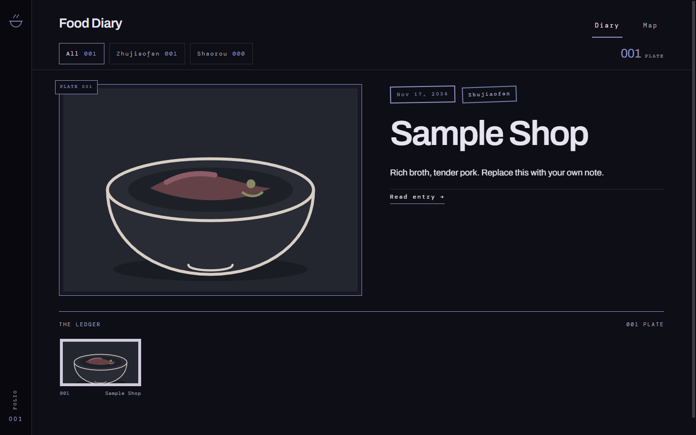
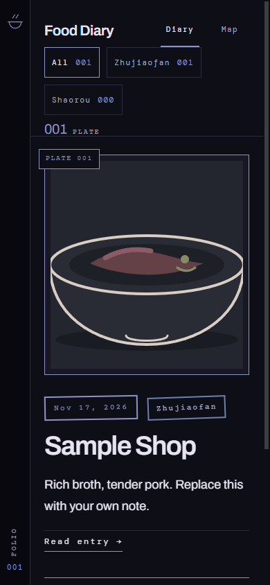
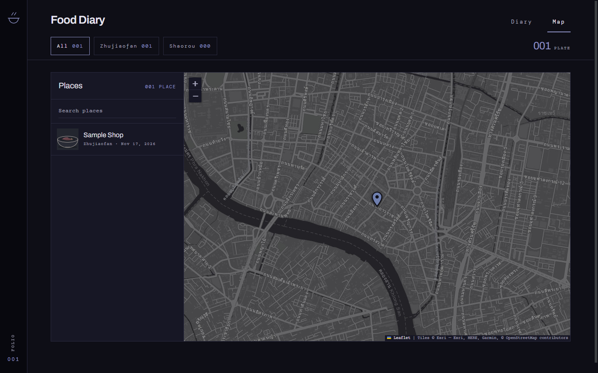
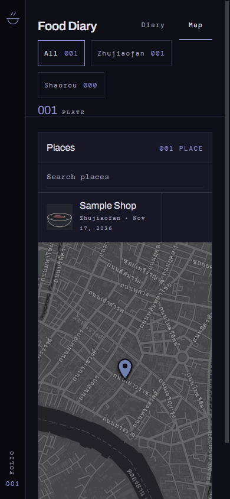
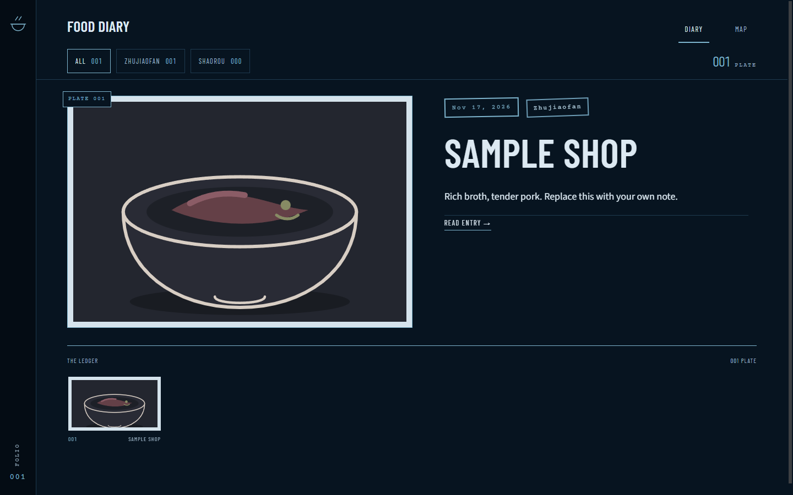
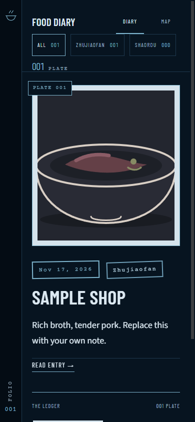
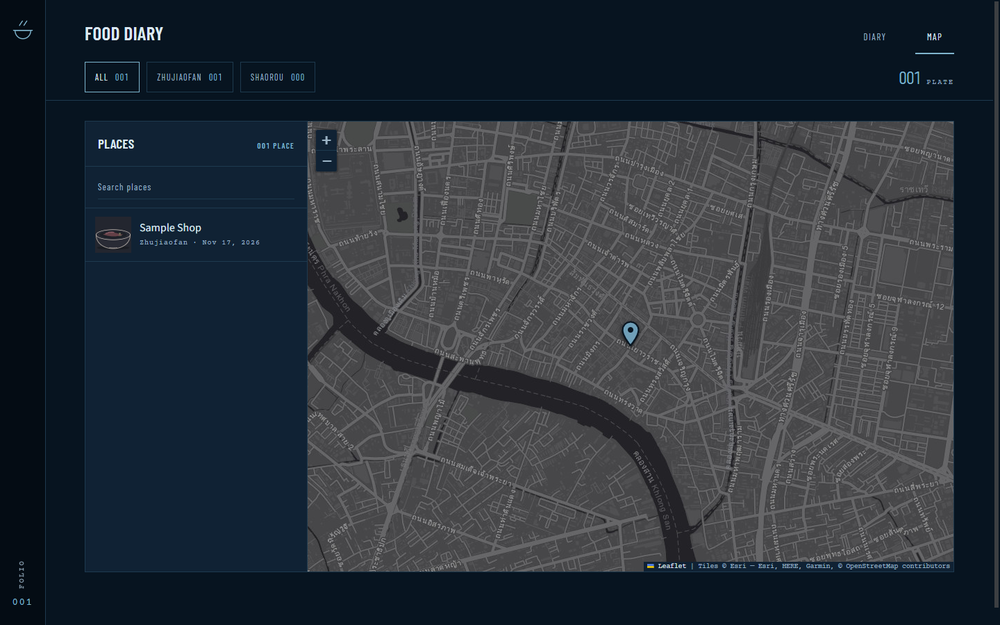
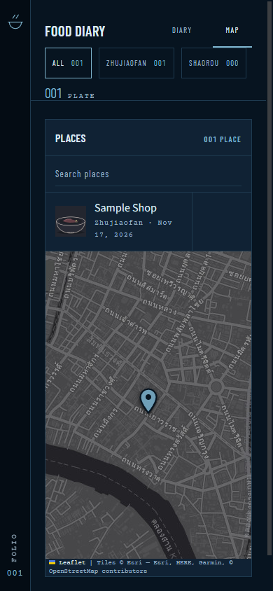

The same live Diary and Map pages, dressed in two proposed worlds. Preview only — no source files changed.
A quiet after-dark gallery. Ink-violet ground, cool bone text and one periwinkle signal. The photograph is lit like a panel on a dark wall; type is geometric and small, rules are hairlines. No warm tones, no café feeling.




A cool photographic archive. Deep prussian blue, ice-pale paper frames, condensed uppercase labels and cyan hairlines. It reads like a contact sheet in a darkroom: systematic, precise, image-led, and far from a dashboard.



